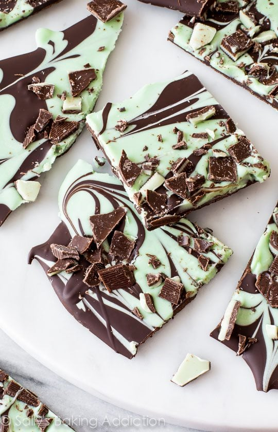

Description
Chocolate bark is one of my favorite candies to make. It’s made quickly, requires few ingredients, and is economical. One batch of bark can fill several bags or boxes if you’re gifting it. Not only this, bark is gorgeous. Especially if you layer it, swirl it, or top it. Let’s also not forget how delicious bark is. It’s chocolate! And what better to pair with chocolate than mint? Besides you, peanut butter.
The bottom layer is semi-sweet chocolate. For the best tasting bark, use quality chocolate. With so little ingredients, it’s important to use pure chocolate. I typically use Ghirardelli. You can buy their baking bars in the baking aisle near the chocolate chips. Because of their stabilizers, chocolate chips do not melt properly. Great for chocolate chip cookies, but not ideal for when we need smooth, melted chocolate like in this recipe.
Ingredients
- White Chocolate
- Green Candy Melts
- Canola or Vegetable Oil
- Peppermint Extract
- Semi-sweet Chocolate
- Andes Mints
Steps
- Line a large baking sheet with parchment paper or a silicone baking mat. Set aside.
- Melt the white chocolate and green candy melts together. Use a double boiler or microwave. If using microwave, stir the chocolate every 20 seconds to help avoid seizing. Once melted and smooth, stir in oil and peppermint extract. Set aside.
- Melt the semi-sweet chocolate in the same manner you melted the chocolate in step 2. Pour onto prepared baking sheet and spread out into a large rectangle. Drizzle the white chocolate mixture on top in lines. See photo above for a visual. Use a toothpick or knife to swirl the layers together.
- Sprinkle the top of the bark with Andes mints.
- Allow the chocolate to set at room temperature in a cool, dry environment. My swirled barks usually take around 45 minutes. If needed, you can stick it in the refrigerator to help speed things up. Once hardened, break into pieces as large or as small as you want.